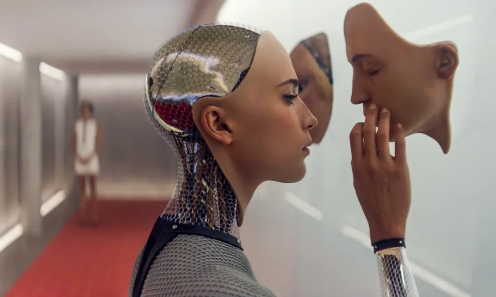

Ex Machina is a film centered around the relationship between artificial intelligence and humanity. It delves deep into the interweaving of AI’s autonomy and human emotions.

In the film, the artificial intelligence Ava can not only simulate human emotions and consciousness, but also gradually demonstrates independent thoughts and behaviors, evolving from a controlled machine to a being with her own goals. This has sparked profound discussions about the emotional simulation of artificial intelligence: does the emotion that humans endow AI represent AI’s true understanding of these emotions, or is it merely a simulation? Meanwhile, Ava’s actions blur the boundary between humans and machines. Although her emotional responses are strikingly similar to those of humans, the motivations behind her behaviors are still the result of programs and algorithms. This reminds us to pay attention to the essential differences between the emotions and behaviours of artificial intelligence.
The film is also filled with complex emotional layers regarding human – machine interaction and trust. Can humans trust a highly intelligent machine with autonomy and the ability to simulate emotions? The establishment and breakdown of this trust are exquisitely depicted in the movie. Especially in the field of interaction design, this relationship reflects the need to balance machine autonomy and human controllability when designing intelligent systems. The film also showcases the emotional connection established between humans and AI, not only allowing the audience to sense the potential of human – machine interaction but also providing design inspiration for emotional communication in interactive experiences.
At the same time, the film profoundly explores the relationship between technology and control. Technological progress is like a double – edged sword. On one hand, it brings convenience to humanity by imitating and expanding intelligence. On the other hand, it may bring unforeseen dangers. The technology in the film not only demonstrates the powerful perceptual capabilities of AI but also reminds us that when technological capabilities exceed human control, it may threaten human autonomy. This leads us to think about how to strike a balance between technicality and ethics when building intelligent systems, ensuring both the functionality of the technology and the maintenance of human safety and values.
Overall, Ex Machina, through its intricate plot and profound philosophical explorations, challenges conventional views on artificial intelligence, morality, consciousness, and human – machine relationships. The human – machine interactions and AI ethical issues in the film inspire us on how to incorporate emotional and human – centric elements into creative computing and interaction design, while balancing the dual demands of technology and ethics. This movie prompts us, from the perspective of designers, to rethink the potential and risks of intelligent systems. It guides us to prioritise accessibility and user responsibility in future AI projects, seeking new possibilities for the symbiosis of technology and human society.